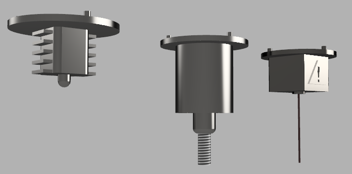

| NOMBRE | DESCRIPCIÓN | RENDER |
|---|---|---|
| 1 |
Uno de los mayores retos de la exploración espacial es la reducida capacidad de transporte y almacenaje de herramientas, El simple hecho de enviar un cohete puede resultar extremadamente caro y complicado por lo que los últimos años se han incrementado los esfuerzos en desarrollar métodos de manufactura en el espacio más eficaces. Desde hace años que la NASA ha volteado a ver a la impresión 3D como una interesante alternativa, actualmente la Estación Espacial Internacional cuenta con la Made in Space la primera impresora en estas instalaciones, un pequeño sistema preparado para trabajar dentro de la estación en condiciones de gravedad cero. Queda claro que la manufactura en el espacio es el futuro de la exploración espacial, que los astronautas de futuras misiones puedan desarrollar sus propias herramientas e incluso estructuras de mayor tamaño y no tengan que depender del transporte de estas, una premisa bastante atractiva, ahorrar en costos y espacio. Teniendo esto en cuenta nuestra propuesta consiste en un sistema de manufactura modular, con capacidades de impresión, maquinado de materiales y corte con láser, fácilmente actualizable para la adición de mejoras y módulos para distintos fines y preparado para funcionar en condiciones de vació y gravedad cero. El diseño general es bastante similar al de una impresora tipo delta con la gran diferencia de que la cama también es móvil, de este modo se puede lograr un movimiento similar a un sistema de 5 ejes que permite mejores resultados en menor tiempo. El cuerpo del modelo esta pensado en titanio, resistente a las extremas condiciones del espacio y especialmente, por su menor expansión y contracción con los cambios bruscos de temperatura. Piezas como las varillas en fibra de carbono y por obviedad, los imanes de neodimio. Las uniones de este modelo se hacen mediante imanes de neodimio para ensamblaje rápido, sin la necesidad y complejidad de utilizar tornillos. Esta también permite un rápido transporte y la capacidad de fijarse a distintas superficies metálicas. Los distintos módulos también se fijan mediante magnetismo para un cambio rápido. Las partes superiores de los ejes también son magnéticas, de este modo pueden montarse sobre grandes piezas metálicas para su maquinado. La mayor ventaja del sistema es la modularidad, la capacidad de intercambiar herramientas para distintos fines y reparaciones rápidas. El primer modulo es el de impresión. La impresión 3D en condiciones de gravedad 0 es todo un reto, más aun en las condiciones del espacio exterior con altas y bajas temperaturas extremas. Por esto la impresión puede tener muchas variantes desde extrusión convencional hasta el uso magnetismo con materiales ferromagnéticos. Los materiales son otro punto importante, proponemos el uso de fibra de carbono y plásticos con inyecciones de metales. El otro modulo es el de maquinado, una herramienta rotativa impulsada por un motor brushless con puntillas intercambiables para distintos tipos de usos. Esto para la capacidad de maquinar metal o roca. El ultimo modulo es el de corte laser, para corte en distintos tipos de material. |
Ver modelo 3D Cuerpo Uniones Modulos  Ejemplos de herramientas Ver modelo 3D Ver modelo 3D |
| 2 |
Cada vez mas el ser humano agota la existencia de minerales en su propio planeta, por lo cual una opción que podría evitar el agotamiento de los mismos seria el comenzar a buscar materiales similares o totalmente nuevos, actualmente ya se ha hecho minería en asteroides, pero deberíamos a empezar a conseguir metales lo cual está comprobado que si se encuentran en distintos planetas y asteroides, pero aun así es un camino largo, por lo cual debemos primero analizar qué tipo de compuestos metálicos se encuentran en el espacio y a su vez que similitudes tienen con los encontrados en la tierra, para de esa forma comenzar a usar recursos de otros planetas. Nuestra propuesta consiste en un detector de minerales está planeado para ser de un tamaño pequeño a diferencia de los que ya conocemos teniendo una medida similar a un termómetro infrarrojo, esto para escanear muestras de roca o conjuntos de tierra pequeños, y determinar qué tipo de minerales se encuentran en estos y si los mismos pueden llegar a ser utilizados de la misma manera que los que usamos y encontramos en la tierra. Como ya sabemos ya se ha hecho minería de asteroides, así que un detector de metales de tamaño pequeño serviría no solo para reducir gastos en transporte de material, sino también para un uso más ergonómico para los exploradores al entrar en terrenos desconocidos. Ahora bien su funcionalidad contemplara cualquier fallo, teniendo repuestos de emergencia en caso de fallos, en si serian dos sensores los que se contemplan para su funcionamiento. El primero es un sensor de proximidad inductiva el cual indica la presencia de compuestos metálicos, no obstante este podría fallar al estar en el espacio, por ende la segunda opción para detectar presencia de minerales es usar una versión reducida de un espectrómetro de masas cuadrupolo (QMS) con el cual podemos ver qué tipo de gases liberan muestras sólidas y de esa manera saber qué tipo de compuesto tienen y compararlo con minerales metálicos de nuestro planeta. |
Ver modelo 3D |